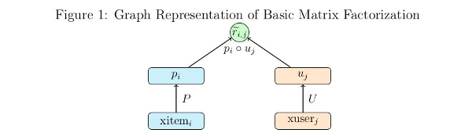
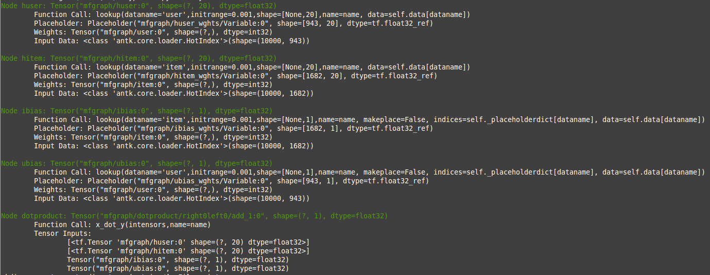
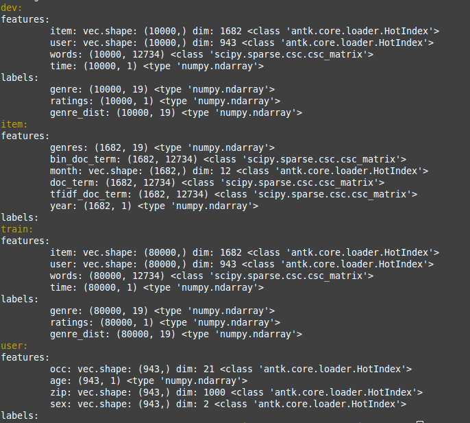

All in One Tutorial via Matrix Factorization¶
Part 1 starts off with a somewhat gentle introduction to the toolkit by implementing basic matrix factorization ratings prediction on the MovieLens 100k dataset. Read the directions carefully and be prepared use your copy and pasting skills. Part 2 explores developing a more complex model using deep neural nets to incorporated user and item meta data into the model. Carefully reading parts 1 and 2 will pay off when you engage in the task of building a new model.
Part 1: Matrix Factorization Model¶
Low Rank Matrix Factorization is a popular machine learning technique used to produce recommendations given a set of ratings a user has given an item. The known ratings are collected in a user-item utility matrix and the missing entries are predicted by optimizing a low rank factorization of the utility matrix given the known entries. The basic idea behind matrix factorization models is that the information encoded for items in the columns of the utility matrix, and for users in the rows of the utility matrix is not exactly independent. We optimize the objective function \(\sum_{(u,i)} (R_{ui} - P_i^T U_u)^2\) over the observed ratings for user u and item i using gradient descent.

We can express the same optimization in the form of a computational graph that will play nicely with tensorflow:
Here \(xitem_i\), and \(xuser_j\) are some representation of the indices for the user and item vectors in the utility matrix. These could be one hot vectors, which can then be matrix multiplied by the P and U matrices to select the corresponding user and item vectors. In practice it is much faster to let \(xitem_i\), and \(xuser_j\) be vectors of indices which can be used by tensorflow’s gather or embedding_lookup functions to select the corresponding vector from the P and U matrices.
This simple model isn’t difficult to code directly in tensorflow, but it’s simplicity allows a demonstration of the functionality of the toolkit without having to tackle a more complex model.
We have some processed MovieLens 100k data prepared for this tutorial located at http://sw.cs.wwu.edu/~tuora/aarontuor/ml100k.tar.gz . The original MovieLens 100k dataset is located at http://grouplens.org/datasets/movielens/ .
- To start let’s import the modules we need, retrieve our prepared data,
- and use the loader module’s
read_data_setsfunction to load our data:
import tensorflow as tf
from antk.core import config
from antk.core import generic_model
from antk.core import loader
loader.maybe_download('ml100k.tar.gz', '.',
'http://sw.cs.wwu.edu/~tuora/aarontuor/ml100k.tar.gz')
loader.untar('ml100k.tar.gz')
data = loader.read_data_sets('ml100k', folders=['dev', 'train'],
hashlist=['item', 'user', 'ratings'])
There is a lot more data in the ml100k folder than we need for demonstrating a basic MF model so we use the hashlist and
folders arguments to select only the data files we want.
We can view the dimensions types, and dictionary keys of the data we’ve loaded using the DataSets.show method,
which is a useful feature for debugging.
data.show()
The previous command will display this to the terminal:

For this data there are 10,000 ratings in dev and test, and 80,000 ratings in train.
Notice that the data type of item and user above is HotIndex. This is a data structure for storing
one hot vectors, with a field for a vector of indices into a one hot matrix and the column size of the one hot matrix.
This will be important as we intend to use the lookup function, which takes HotIndex
objects for its data argument, makes a placeholder associated with this data and uses the dim attribute of the HotIndex
data to create a tf.Variable tensor with the correct dimension. The output is an embedding_lookup using the placeholder
and variable tensors created.
This model does better with the target ratings centered about the mean so let’s center the ratings.
data.train.labels['ratings'] = loader.center(data.train.labels['ratings'])
data.dev.labels['ratings'] = loader.center(data.dev.labels['ratings'])
Todo
Make a plain text file named mf.config using the text below. We will use this to make the tensorflow computational graph:
dotproduct x_dot_y()
-huser lookup(dataname='user', initrange=0.001, shape=[None, 100])
-hitem lookup(dataname='item', initrange=0.001, shape=[None, 100])
-ibias lookup(dataname='item', initrange=0.001, shape=[None, 1])
-ubias lookup(dataname='user', initrange=0.001, shape=[None, 1])
The python syntax highlighting illustrates the fact that the node specifications in a .config file are just python function calls with two things omitted, the first argument which is a tensor or list of tensors, and the last argument which is the name of the tensor output which defines it’s unique variable scope. The first argument is derived from the structure of the config spec, inferred by a marker symbol which we have chosen as ‘-‘. The input is the list of tensors or the single tensor in the spec at the next level below a node call. Tabbing is optional. It may be easier to read a config file with tabbing if you are using node functions without a long sequence of arguments. The second omitted argument, the name, is whatever directly follows the graph markers.
Now we make an AntGraph object.
with tf.variable_scope('mfgraph'):
ant = config.AntGraph('mf.config',
data=data.dev.features,
marker='-',
develop=True)
When you run the code now you will get a complete print of the tensors made from the config file because we have set the develop argument to True.
We can get a visual representation of the graph with another line:
ant.display_graph()
When you run this code a graphviz dot pdf image of the graph you have composed should pop up on the screen (assuming you have graphviz installed). This pdf file will show up in the pics folder with the name no_name.pdf. There are of course parameters for specifying the name and location where you want the picture to go. The dot specification will be located in the same place as the picture and be named no_name.dot unless you have specified a name for the file.

Shown in the graph picture above the x_dot_y function takes a list of tensors as its first argument.
The first two tensors are matrices whose rows are dot producted resulting in a vector containing a scalar for each row.
The second two tensors are optional biases. For this model, giving a user and item bias helps a great deal. When lookup
is called more than once in a config file using the same data argument the previously made placeholder tensor is used,
so here ibias depends on the same placeholder as hbias and ubias depends on the same placeholder as huser, which
is what we want.
The AntGraph object, ant is a complete record of the tensors created in graph building.
There are three accessible fields, tensordict, placeholderdict, and tensor_out,
which are a dictionary of non-placeholder tensors made during graph creation, a dictionary of placeholder tensors made during
graph creation and the tensor or list of tensors which is the output of the top level node function.
These should be useful if we want to access tensors post graph creation.
Okay let’s finish making this model:
y = ant.tensor_out
y_ = tf.placeholder("float", [None, None], name='Target')
ant.placeholderdict['ratings'] = y_ # put the new placeholder in the placeholderdict for training
objective = (tf.reduce_sum(tf.square(y_ - y)) +
0.1*tf.reduce_sum(tf.square(ant.tensordict['huser'])) +
0.1*tf.reduce_sum(tf.square(ant.tensordict['hitem'])) +
0.1*tf.reduce_sum(tf.square(ant.tensordict['ubias'])) +
0.1*tf.reduce_sum(tf.square(ant.tensordict['ibias'])))
dev_rmse = tf.sqrt(tf.div(tf.reduce_sum(tf.square(y - y_)), data.dev.num_examples))
model = generic_model.Model(objective, ant.placeholderdict,
mb=500,
learnrate=0.01,
verbose=True,
maxbadcount=10,
epochs=100,
evaluate=dev_rmse,
predictions=y)
Notice that the tensordict enables easy access to huser, hitem, ubias, ibias, which we want to regularize to
prevent overfitting. The Model object we are creating model needs the fields objective, placeholderdict, predictions, and targets.
If you don’t specify the other parameters default values are set. objective is used as the loss function for gradient
descent. placeholderdict is used to pair placeholder tensors with matrices from a dataset dictionary with the same
keys. targets, and predictions are employed by the loss function during evaluation, and by the prediction function
to give outputs from a trained model.
Training is now as easy as:
model.train(data.train, dev=data.dev)
You should get about 0.92 RMSE.
There are a few antk functionalities we can take advantage of to make our code more compact. Any node_op function that creates trainable weights has a parameter for adding l2 regularization to the weights of the model. We just change our config as below and we can eliminate the four extra lines in the definition of objective.
dotproduct x_dot_y()
-huser lookup(dataname='user', initrange=0.001, l2=0.1, shape=[None, 100])
-hitem lookup(dataname='item', initrange=0.001, l2=0.1, shape=[None, 100])
-ibias lookup(dataname='item', initrange=0.001, l2=0.1, shape=[None, 1])
-ubias lookup(dataname='user', initrange=0.001, l2=0.1, shape=[None, 1])
Also, we have a function for RMSE, and we can evaluate the mean absolute error using the save_tensors argument to the generic_model constructor. Our code now looks like this:
y = ant.tensor_out
y_ = tf.placeholder("float", [None, None], name='Target')
ant.placeholderdict['ratings'] = y_ # put the new placeholder in the graph for training
objective = node_ops.se(y_ - y)
dev_rmse = node_ops.rmse(y, y_)
dev_mae = node_ops.mae(y, y_)
model = generic_model.Model(objective, ant.placeholderdict,
mb=500,
learnrate=0.01,
verbose=True,
maxbadcount=10,
epochs=100,
evaluate=dev_rmse,
predictions=y,
save_tensors={'dev_mae': dev_mae})
model.train(data.train, dev=data.dev)
If you don’t wan’t to evaluate a model during training, for instance if you are doing cross-validation, you can just hand the train
method a training set and omit the dev set. Note that here there must be keys in either the DataSet
features, or labels dictionaries, that match with the keys from the placeholderdict which is handed
to the Model constructor. In our case we have placed a placeholder with the key ratings in the
placeholdedict corresponding to
the ratings key in our data DataSet. So our placeholderdict is:
{'item': <tensorflow.python.framework.ops.Tensor object at 0x7f0bea7b43d0>,
'user': <tensorflow.python.framework.ops.Tensor object at 0x7f0bea846e90>,
'ratings': <tensorflow.python.framework.ops.Tensor object at 0x7f0bea77fc90>}
Now we have a trained model that does pretty well but it would be nice to automate a hyper-parameter search to find the best we can do (should be around .91).
We can change our mf.config file to accept variables for hyperparameters by substituting hard values with variable names prefixed with a ‘$’:
dotproduct x_dot_y()
-huser lookup(dataname='user', initrange=$initrange, l2=$l2, shape=[None, $kfactors])
-hitem lookup(dataname='item', initrange=$initrange, l2=$l2, shape=[None, $kfactors])
-ibias lookup(dataname='item', initrange=$initrange, l2=$l2, shape=[None, 1])
-ubias lookup(dataname='user', initrange=$initrange, l2=$l2, shape=[None, 1])
Now we have to let the AntGraph constructor know what to bind these variables to with a variable_bindings
argument. So change the constructor call like so.
with tf.variable_scope('mfgraph'):
ant = config.AntGraph('mf.config',
data=data.dev.features,
marker='-',
variable_bindings = {'kfactors': 100, 'initrange':0.001, 'l2':0.1})
Todo
Modify the code you’ve written to take command line arguments for the hyperparameters: kfactors, initrange, mb, learnrate, maxbadcount, l2, and epochs, and conduct a parameter search for the best model.
Part 2: Tree Model¶
To demonstrate the power and flexibility of using a config file we can make this more complex model below by changing a few lines of code and using a different config file:

We need to change the read_data_sets call to omit the optional hashlist parameter so we get more features from
the data folder (if a hashlist parameter is not supplied, read_data_sets reads all files with name prefixes
features_ and labels_ ).
Todo
Make a new python file tree.py with the code below:
import tensorflow as tf
from antk.core import config
from antk.core import generic_model
from antk.core import loader
from antk.core import node_ops
data = loader.read_data_sets('ml100k', folders=['dev', 'train', 'item', 'user'])
data.show()
Now we have some user and item meta data which we can examine:
The idea of this model is to have a deep neural network for each stream of user meta data and item meta data. The user and item dnn’s are concatenated respectively and then fed to a user dnn and an item dnn. The outputs of these dnn’s are dot producted to provide ratings predictions. We can succinctly express this model in a .config file.
Todo
Make a plain text file called tree.config with the specs for our tree model.
dotproduct x_dot_y()
-all_user dnn([$kfactors,$kfactors,$kfactors], activation='tanh',bn=True,keep_prob=0.95)
--tanh_user tf.nn.tanh()
---merge_user concat($kfactors)
----huser lookup(dataname='user', initrange=$initrange, shape=[None, $kfactors])
----hage dnn([$kfactors,$kfactors,$kfactors],activation='tanh',bn=True,keep_prob=0.95)
-----agelookup embedding()
------age placeholder(tf.float32)
------user placeholder(tf.int32)
----hsex dnn([$kfactors,$kfactors,$kfactors],activation='tanh',bn=True,keep_prob=0.95)
-----sexlookup embedding()
------sex_weights weights('tnorm', [2, $kfactors])
------sexes embedding()
-------sex placeholder(tf.int32)
-------user placeholder(tf.int32)
----hocc dnn([$kfactors,$kfactors,$kfactors],activation='tanh',bn=True,keep_prob=0.95)
-----occlookup embedding()
------occ_weights weights('tnorm', [21, $kfactors])
------occs embedding()
-------occ placeholder(tf.int32)
-------user placeholder(tf.int32)
----hzip dnn([$kfactors,$kfactors,$kfactors],activation='tanh',bn=True,keep_prob=0.95)
-----ziplookup embedding()
------zip_weights weights('tnorm', [1000, $kfactors])
------zips embedding()
-------zip placeholder(tf.int32)
-------user placeholder(tf.int32)
----husertime dnn([$kfactors,$kfactors,$kfactors],activation='tanh',bn=True,keep_prob=0.95)
-----time placeholder(tf.float32)
-all_item dnn([$kfactors,$kfactors,$kfactors], activation='tanh',bn=True,keep_prob=0.95)
--tanh_item tf.nn.tanh()
---merge_item concat($kfactors)
----hitem lookup(dataname='item', initrange=$initrange, shape=[None, $kfactors])
----hgenre dnn([$kfactors,$kfactors,$kfactors],activation='tanh',bn=True,keep_prob=0.95)
-----genrelookup embedding()
------genres placeholder(tf.float32)
------item placeholder(tf.int32)
----hmonth dnn([$kfactors,$kfactors,$kfactors],activation='tanh',bn=True,keep_prob=0.95)
-----monthlookup embedding()
------month_weights weights('tnorm', [12, $kfactors])
------months embedding()
-------month placeholder(tf.int32)
-------item placeholder(tf.int32)
----hyear dnn([$kfactors,$kfactors,$kfactors],activation='tanh',bn=True,keep_prob=0.95)
-----yearlookup embedding()
------year placeholder(tf.float32)
------item placeholder(tf.int32)
----htfidf dnn([$kfactors,$kfactors,$kfactors],activation='tanh',bn=True,keep_prob=0.95)
-----tfidflookup embedding()
------tfidf_doc_term placeholder(tf.float32)
------item placeholder(tf.int32)
----hitemtime dnn([$kfactors,$kfactors,$kfactors],activation='tanh',bn=True,keep_prob=0.95)
-----time placeholder(tf.float32)
-ibias lookup(dataname='item', shape=[None, 1], initrange=$initrange)
-ubias lookup(dataname='user', shape=[None, 1], initrange=$initrange)
This model employs all the user and item meta-data we have at our disposal. The config file looks pretty complicated, and it is,
but at least it fits on a screen and we can read the high level structure of the model. Imagine developing this model with straight python tensorflow code. This would be hundreds of lines of code and it would be much more difficult to see what was going on with the model.
We can see what the model will look like without actually building the graph with the config.testGraph function.
config.testGraph('tree.config')

This looks like a pretty cool model! We should probably normalize the meta data features for training though.
data.train.labels['ratings'] = loader.center(data.train.labels['ratings'], axis=None)
data.dev.labels['ratings'] = loader.center(data.dev.labels['ratings'], axis=None)
data.user.features['age'] = loader.center(data.user.features['age'], axis=None)
data.item.features['year'] = loader.center(data.item.features['year'], axis=None)
data.user.features['age'] = loader.maxnormalize(data.user.features['age'])
data.item.features['year'] = loader.maxnormalize(data.item.features['year'])
All our other features besides time are categorical and so use lookups. I think I normalized time during data processing but it couldn’t hurt to check. If you think it is a good idea you can whiten these data inputs to have zero mean and unit variance with some convenience functions from the loader module. Now we should build our graph. Notice that we have omitted the l2 variable in the config file. We are using dropout to regularize our output as an alternative, since this is a standard regularization technique for deep neural networks.
Remember we need a python dictionary of numpy matrices whose keys match the names of placeholder and lookup operations that will
infer dimensions for the AntGraph constructor. So we need to add these lines:
datadict = data.user.features.copy()
datadict.update(data.item.features)
configdatadict = data.dev.features.copy()
configdatadict.update(datadict)
Now we can build the graph. We’ll set develop to False because a lot of tensors are going to get made. If something goes wrong with a model this big set develop to True and pipe standard output to a file for analysis:
with tf.variable_scope('mfgraph'):
ant = config.AntGraph('tree.config',
data=configdatadict,
marker='-',
variable_bindings = {'kfactors': 100, 'initrange':0.001},
develop=False)
y = ant.tensor_out
y_ = tf.placeholder("float", [None, None], name='Target')
ant.placeholderdict['ratings'] = y_ # put the new placeholder in the graph for training
objective = tf.reduce_sum(tf.square(y_ - y))
dev_rmse = node_ops.rmse(y, y_)
Training this model will naturally take longer so we can set the evaluation schedule to be shorter than an epoch to check
in on how things are doing. Also, we will need a smaller learnrate for gradient descent. So we can initialize a Model object
with the following hyper-parameters as a first approximation, and then train away...
model = generic_model.Model(objective, ant.placeholderdict,
mb=500,
learnrate=0.0001,
verbose=True,
maxbadcount=10,
epochs=100,
evaluate=dev_rmse,
predictions=y)
model.train(data.train, dev=data.dev, supplement=datadict, eval_schedule=1000)
Note
We added the supplement argument to train so that the placeholders related to meta-data could be added to the tensorflow
feed dictionary with the backend function get_feed_dict employed by the Model constructor.
This model takes a while to train and from some poking around it is hard to find a set of hyperparameters that will approach the accuracy of a basic matrix factorization model. The hyperparameters I have provided should give about 0.93 RMSE which isn’t good for this data set. We have a lot of things to try such as batch normalization, dropout, hidden layer size, number of hidden layers, activation functions, optimization strategies, subsets of the meta data to incorporate into the mode, and of course the standard learning rate and intitialization strategies.
Todo
Modify the code you’ve written to take arguments for the set of new hyperparameters, and optional optimization parameters
from the Model API. Perform a parameter search to see if you can do better than basic MF.